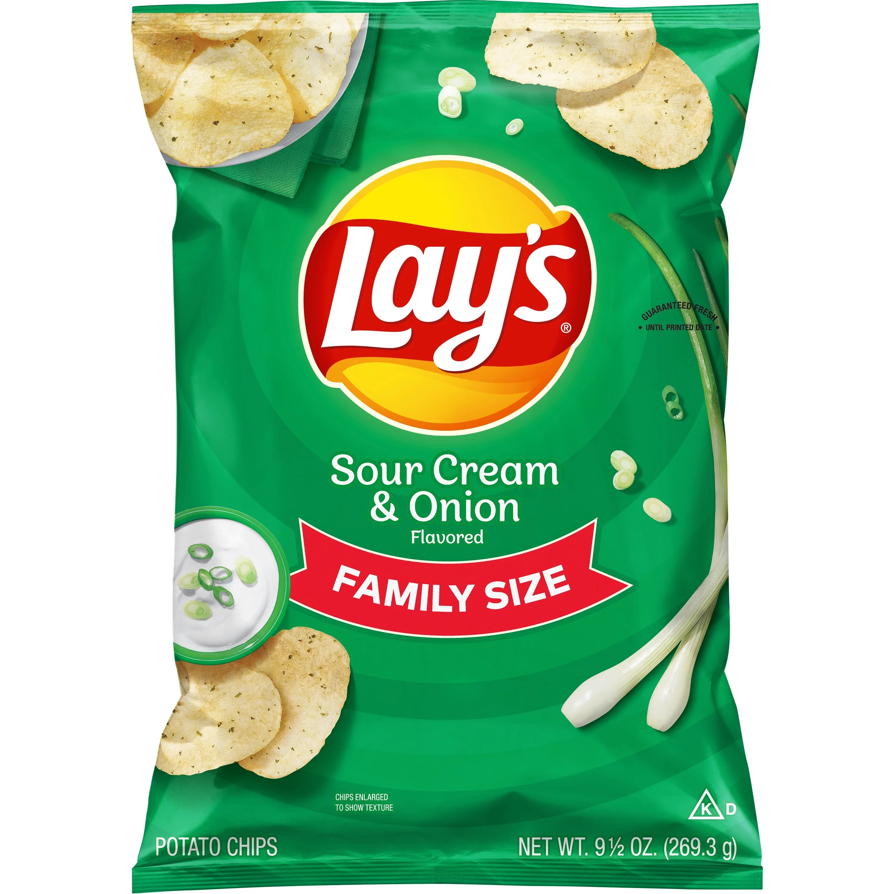

Sour Cream and Onion
Sour cream and onion chips are a delectable and popular variety of flavored potato chips that have captured the hearts and taste buds of snack enthusiasts around the world. These chips are known for their irresistible combination of tangy sour cream and the savory, aromatic essence of green onions. With every bite, they offer a delightful symphony of flavors and textures that make them a beloved snack option. The secret to the appeal of sour cream and onion chips lies in the seasoning blend used to coat the crispy potato slices. The creamy sour cream flavor is perfectly balanced by the mild, slightly sweet taste of green onions, creating a harmonious taste profile that keeps you reaching for more. The gentle tang of sour cream adds a zesty twist that complements the natural earthiness of the potato, resulting in a flavor that is rich and satisfying.
